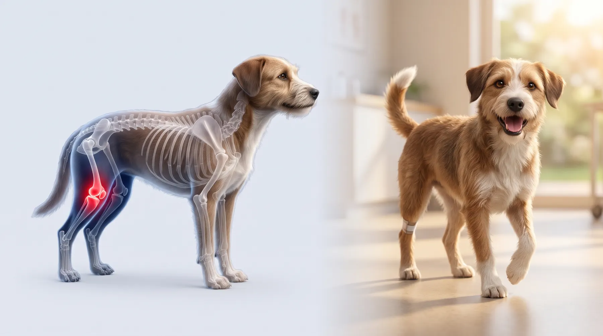
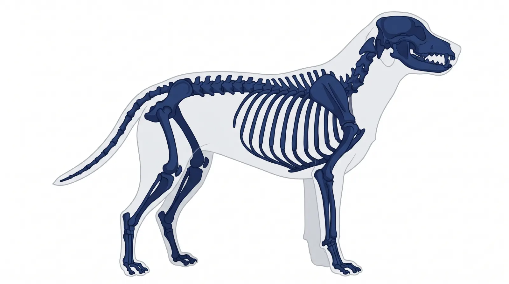
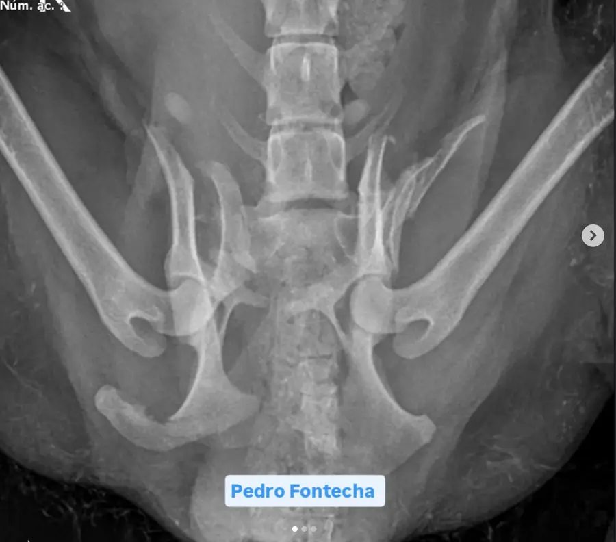
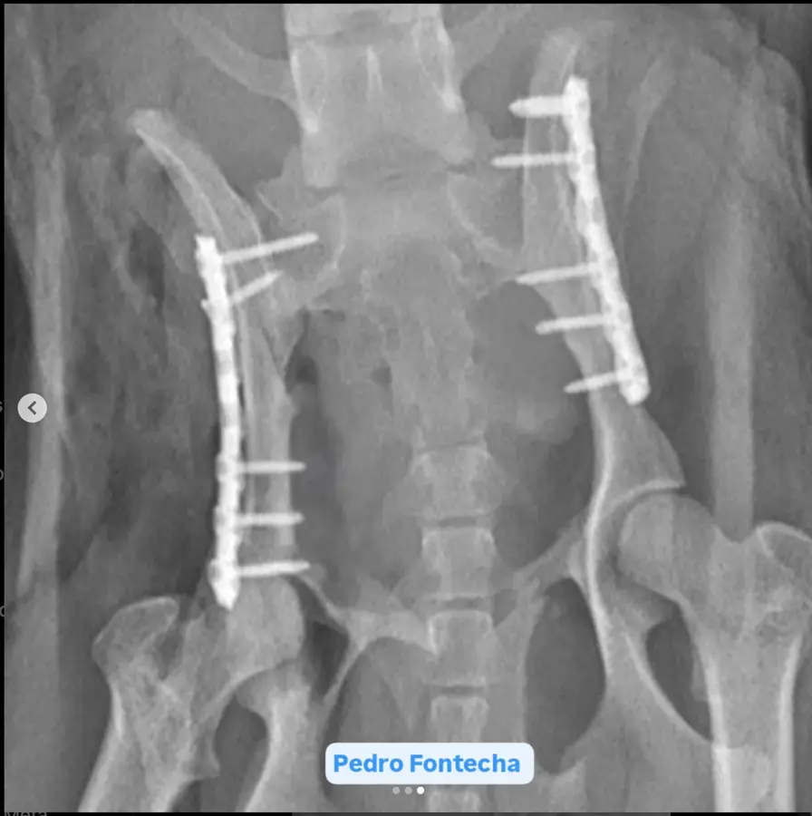
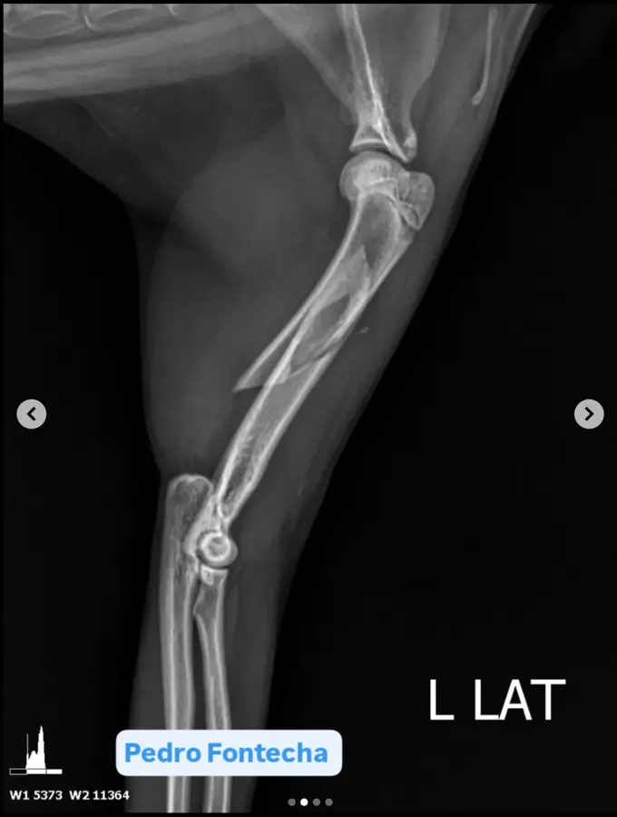
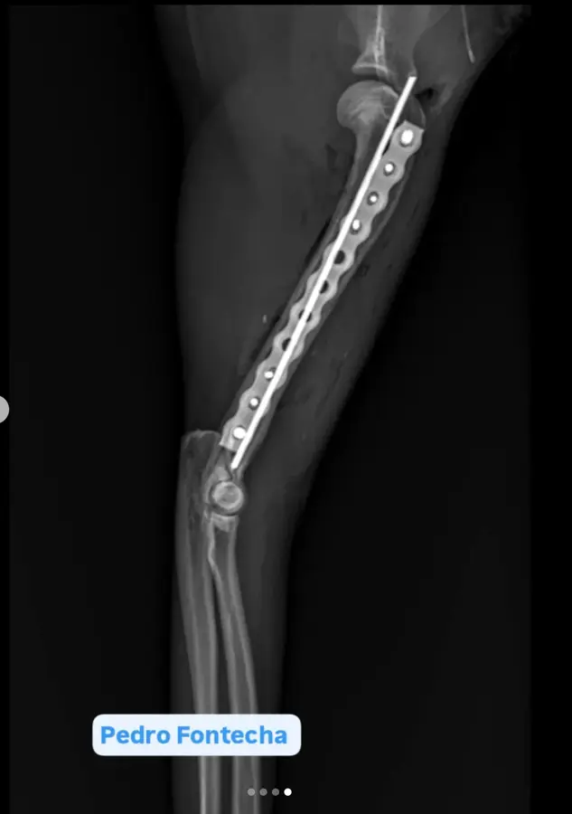
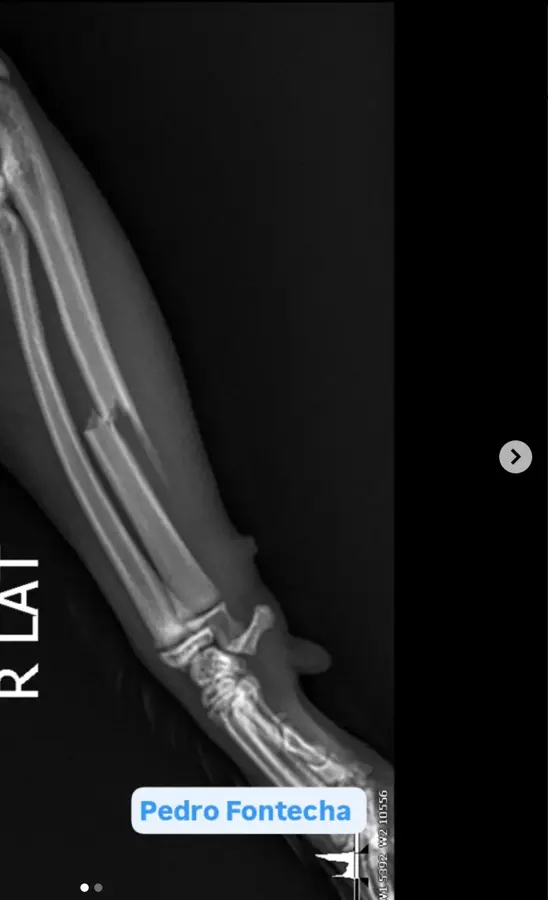
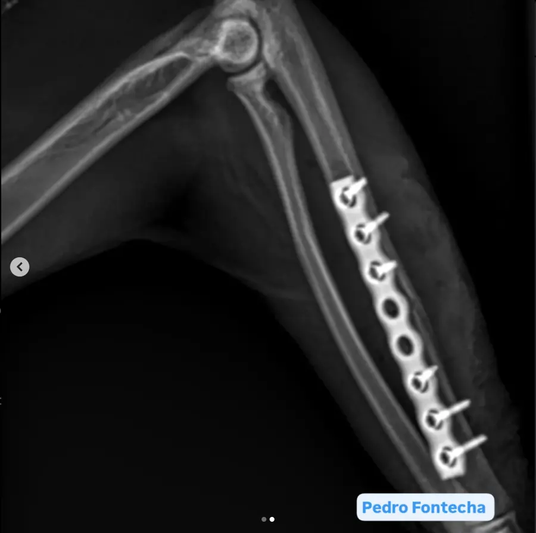
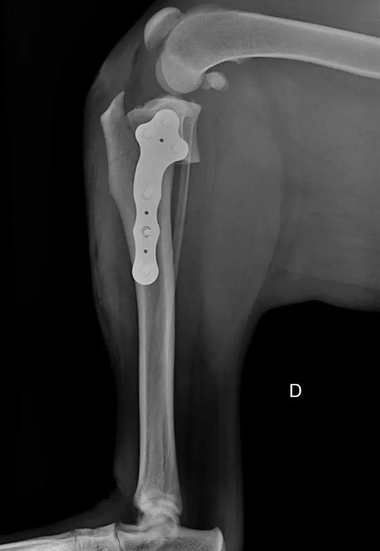
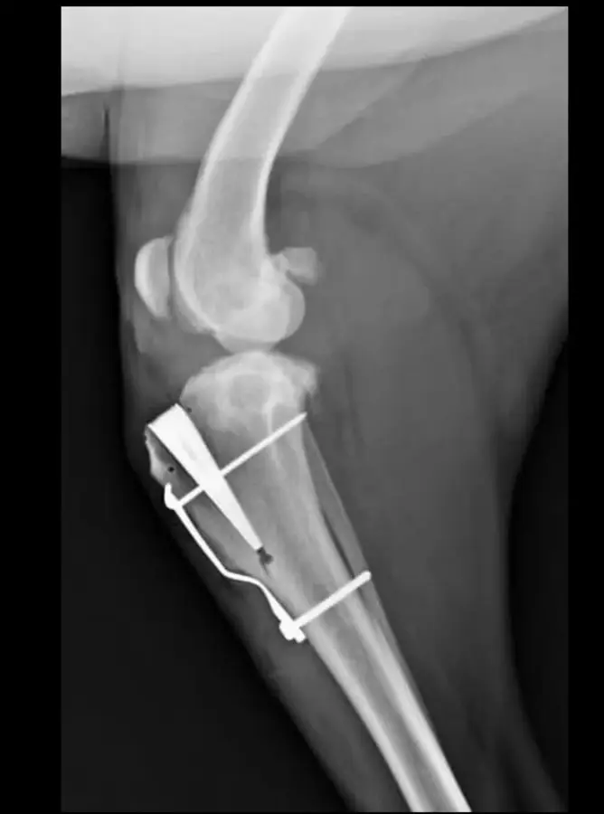

Traumatología y ortopedia · Para clínicas veterinarias
Su aliado quirúrgico en ortopedia veterinaria
Cirugía ortopédica con el Dr. Pedro Fontecha Umaña, especialista con más de 20 años de experiencia internacional. Usted deriva el caso; el paciente vuelve a su clínica.

El especialista
Dr. Pedro Fontecha Umaña
Doctor en Veterinaria · Especialista en Ortopedia y Traumatología
Veterinario con formación académica en Colombia y España. Experto en ortopedia, traumatología y cirugía de tejidos blandos en pequeños animales. Docente universitario, autor de publicaciones científicas y conferencista internacional.
Trayectoria
- 2024 – 2025Hospital Veterinari CanisGirona, España
- 2008 – 2025Servicio de cirugía ortopédica independienteBarcelona y Catalunya, España
- 2007 – 2020Profesor asociado · Universidad Autónoma de BarcelonaTraumatología y Ortopedia de pequeños animales
- 2007 – 2019Hospital Clínic Veterinari UABBarcelona, España
Docencia e investigación
- Autor del libro “Estudio radiológico de las patologías articulares de la extremidad anterior del perro” (2007).
- Coautor y ponente en congresos internacionales (AVEPA-SEVC, SECIVE).
- Publicaciones científicas en ortopedia y traumatología, con énfasis en consolidación de fracturas y biomateriales.
- Formación de residentes y programas de posgrado en cirugía veterinaria.
- Investigación en biomateriales y técnicas para mejorar la consolidación ósea.
Capacitación
Por qué derivar con nosotros
Usted resuelve el caso. Su paciente sigue siendo suyo.
El paciente vuelve a su clínica
Tras la cirugía, los controles y el seguimiento regresan a usted.
Informe quirúrgico completo
Recibe técnica, implantes, radiografías y plan de recuperación.
Respuesta ágil
Valoración del caso y presupuesto claro antes de programar.
Técnicas actuales
TPLO, TTA, placas, clavos interlock y fijación externa.
Mapa anatómico
Toque una zona para ver qué resolvemos

Catálogo completo
Busque un procedimiento
Equipamiento y técnicas
Técnicas destacadas
Osteotomía de nivelación de la meseta tibial
Para rotura de ligamento cruzado craneal, especialmente en perros medianos y grandes.
Avance de la tuberosidad tibial · TTA Rapid
Alternativa para estabilizar la rodilla con rotura de ligamento cruzado.
Osteosíntesis con placa y tornillos
Fracturas diafisarias, articulares y artrodesis de carpo y tarso.
Clavo interlock, Tie-In y fijador externo
Opciones para fracturas de húmero, fémur, radio y tibia.
Casos clínicos
Resultados del Dr. Fontecha
Radiografías reales antes y después de la cirugía. Toque una imagen para verla en grande.

Antes
DespuésFractura de ilion bilateral
Caniche politraumatizado · Osteosíntesis con placas.

Antes
DespuésFractura de húmero
Paciente felino · Placa bloqueada y aguja K intramedular.

Antes
DespuésFractura de cúbito
Paciente felino · Osteosíntesis con placa.

TPLO
TTARotura de ligamento cruzado
Control posquirúrgico con TPLO y con TTA.
Proceso de derivación
Cuatro pasos, de su clínica a la nuestra y de vuelta
Contacto
Envíe historia clínica y radiografías por WhatsApp o correo.
Valoración
Revisamos el caso, proponemos la técnica y enviamos presupuesto.
Cirugía
Programamos la intervención y le informamos del resultado.
Retorno
El paciente vuelve a su clínica con informe y plan de controles.
Condiciones comerciales
Tarifas exclusivas para clínicas derivadoras
El material quirúrgico y los honorarios se presupuestan por separado. Solicite nuestra lista de precios para clínicas.